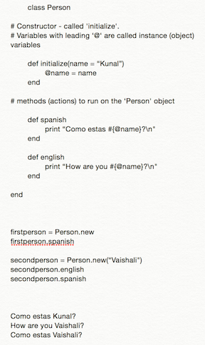

DBC-Technical Blog:
Date: 08.09.15
Entry #: 5
Commentary:

As you can tell, what Classes allow a programmer to do is instead of having to write code for the first person (Kunal) and another piece of code for the second person (Vaishali), by defining a class and using instance variables within methods, one can easily maneuver between actions performed on Kunal and Vaishali, very simply and eloquently by populating either method with said 'instance' variable names. Notice the output, (last three lines) and how they were achieved.